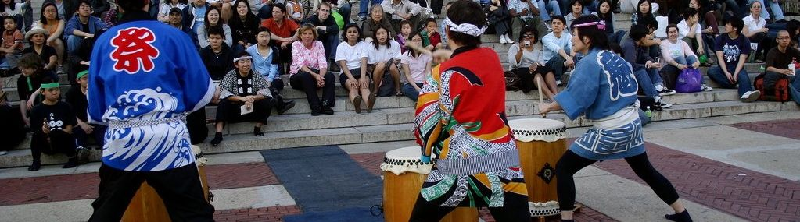
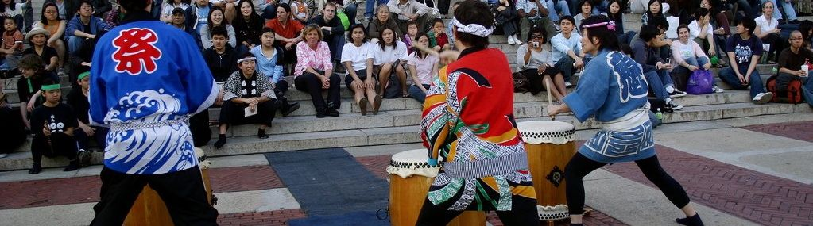
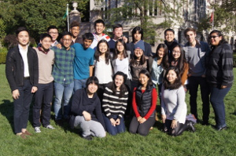

-

-
 

-

CJS was founded in order to introduce aspects of Japanese culture to members of the Columbia community. In the past, we have held annual events such as Sushi Night, Curry in a Hurry, Movie Night, and Matsuri, as well as new events each year! Learn more about us!Stay in Touch!

|

Every year CJS puts together one of the biggest Japanese festivals in the city! Matsuri 2016 was held on Friday, March 25th from 4-8pm! [Click for more info]
|
Sushi Night is Back on November 11! A variety of sushi ingredients is provided, and you can make your own sushi however you like! See various musical and dance groups perform. This year's theme is Japanese temples and shrines, so get excited for beautiful decorations and fun trivia on Japanese shrines and temples! [Click for more info]
|
Affiliations
Columbia University, Barnard College, Weatherhead East Asian Institution, Donald Keene Center
Show Some Love
Copyright 2016 Columbia Japan Society. Site maintained by Leon An.